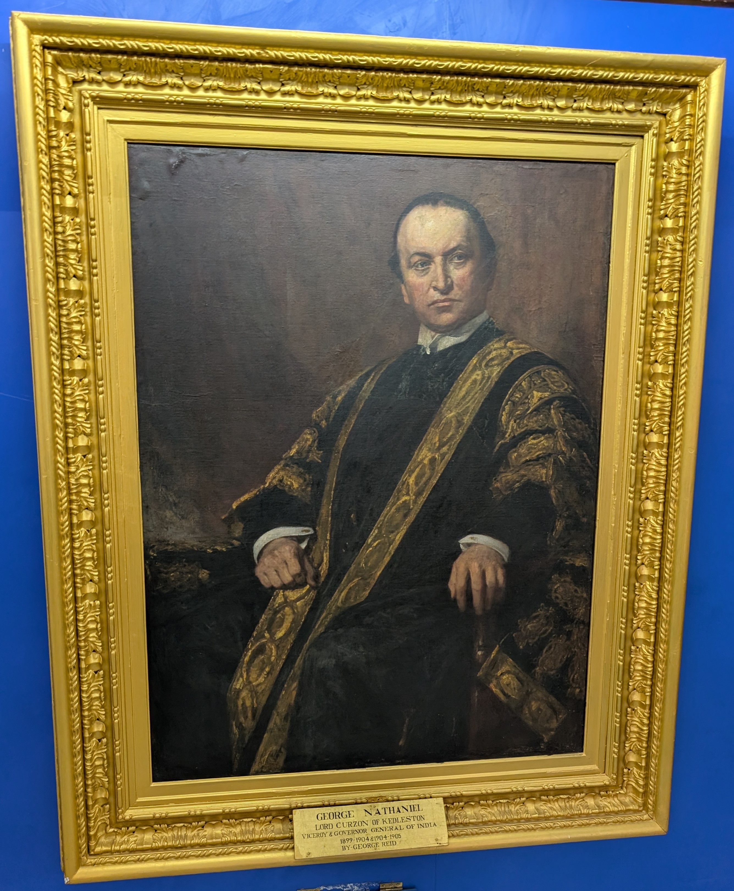
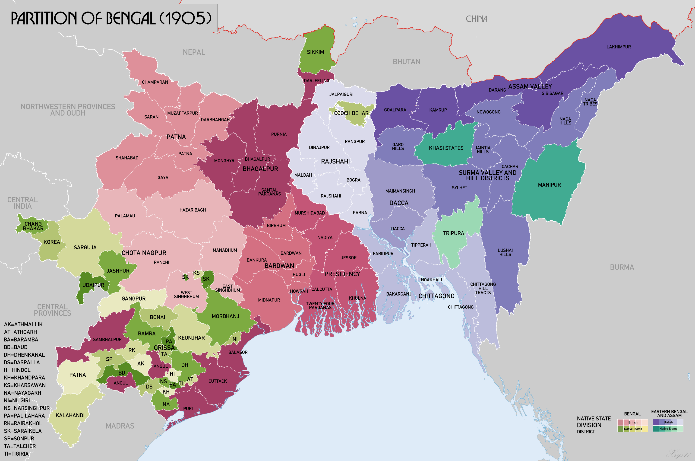
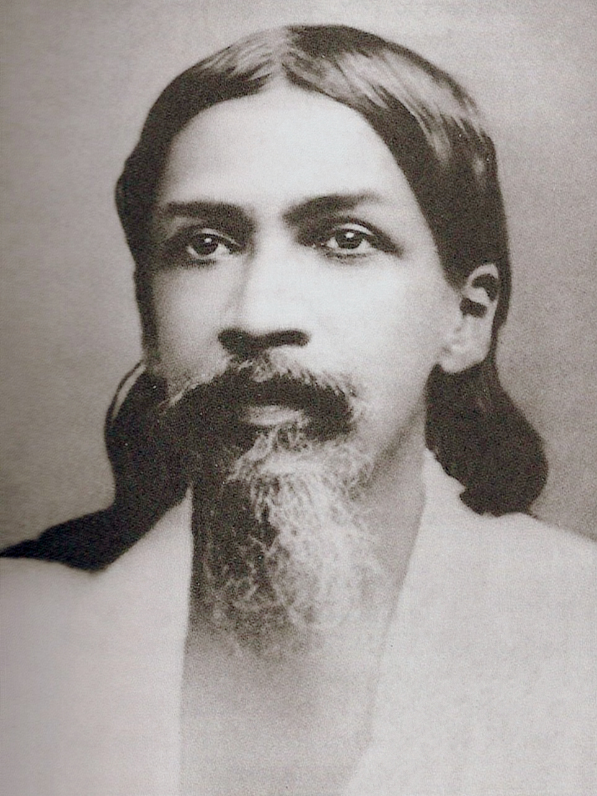
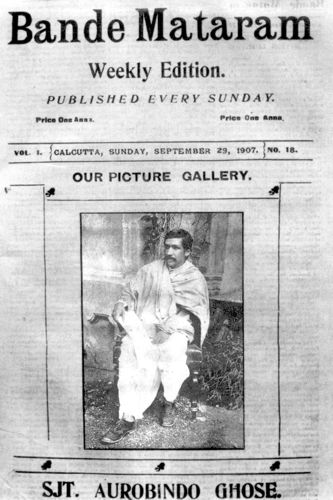

| Item | Detail |
|---|---|
| Date of Partition | October 16, 1905 |
| Viceroy | Lord Curzon (1899–1905) |
| Official reason | Administrative efficiency — Bengal too large (78.5M people) |
| Real motive | Divide and rule — separate Hindu-majority West Bengal from Muslim-majority East Bengal to weaken the nationalist movement |
| New provinces created | (1) Eastern Bengal & Assam (capital Dacca; Muslim majority); (2) West Bengal (included Bihar & Orissa; Hindu majority) |
| Date of Annulment | 1911 (King-Emperor George V at the Delhi Durbar) |


| Phase | Period | Key Features |
|---|---|---|
| 1. Launch (Struggle) | Oct 1905 – 1906 | Boycott of British goods; Swadeshi promotion; protests, processions, singing Vande Mataram; Tagore's Raksha Bandhan; student participation |
| 2. Repression (Truce) | 1907 – 1908 | Government crackdown; Tilak imprisoned (Mandalay, 1908); Aurobindo retired to Pondicherry (1910); Surat Split (1907) weakened the movement |
| 3. Renewed struggle | 1909 – 1911 | Morley-Minto Reforms (1909); sustained resistance; eventual annulment in 1911 |
| Leader | Role | Key Contribution |
|---|---|---|
| Bal Gangadhar Tilak | Extremist leader (Maharashtra) | "Swaraj is my birthright"; Kesari newspaper; Ganapati & Shivaji festivals; imprisoned Mandalay 1908 |
| Lala Lajpat Rai | Extremist leader (Punjab) | "Lion of Punjab"; led Swadeshi in Punjab; propounded Safety Valve Theory; lathi-charged to death 1928 |
| Bipin Chandra Pal | Extremist leader (Bengal) | "New India" journal; advocated Passive Resistance; the "Pal" of Lal-Bal-Pal |
| Aurobindo Ghosh | Extremist intellectual (Bengal) | "Bande Mataram" newspaper (1906); first principal of Bengal National College; later turned to spirituality (Pondicherry Ashram, 1910) |
| Rabindranath Tagore | Cultural leader (Bengal) | Initiated Raksha Bandhan as unity symbol; led protest processions; composed "Amar Sonar Bangla" (later Bangladesh's anthem) |
| Bankim Chandra Chatterjee | Literary predecessor | Wrote "Anandamath" (1882) — source of "Vande Mataram"; the song became the Swadeshi anthem |


From the Bengal Partition (1905) to the annulment (1911) — the six-year arc of the movement.
| Item | Value | Notes |
|---|---|---|
| Partition date | October 16, 1905 | Lord Curzon; official reason: admin efficiency |
| Provinces created | Eastern Bengal & Assam + West Bengal (with Bihar-Orissa) | Divide on religious lines |
| Annulment | 1911 | King George V at Delhi Durbar |
| Swadeshi Movement | 1905–1911 | First mass nationalist movement |
| 4-fold programme (1906) | Swaraj, Swadeshi, Boycott, National Education | INC Calcutta session; Naoroji presided |
| Vande Mataram source | Anandamath (Bankim Chandra, 1882) | National Song (Jan 24, 1950) |
| Bande Mataram newspaper | Aurobindo Ghosh (1906) | Radical Extremist journal |
| Bengal National College | 1906, Calcutta | Aurobindo as first principal |
| Raksha Bandhan | Tagore's innovation | Hindu-Muslim unity symbol |
| Muslim League founded | December 30, 1906 | Dacca; Nawab Salimullah; Sir Aga Khan (first Pres) |
| Morley-Minto Reforms | 1909 (Indian Councils Act) | Separate electorates for Muslims |
| Surat Split | 1907 | Moderates vs Extremists; Rash Behari Ghosh presided |
| S-T-S strategy | Swadeshi Movement | 70th BPSC PYQ — Struggle-Truce-Struggle |